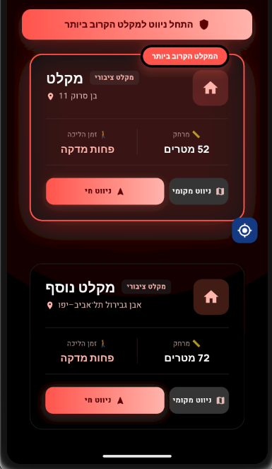
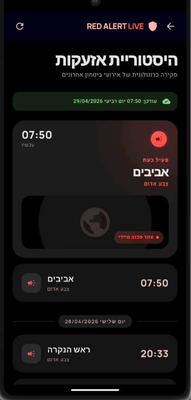
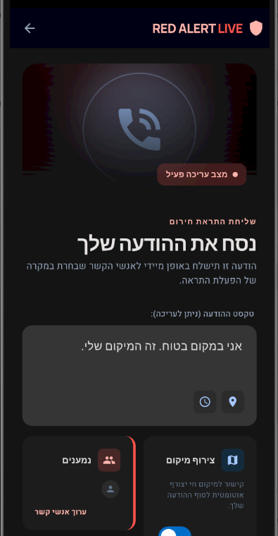
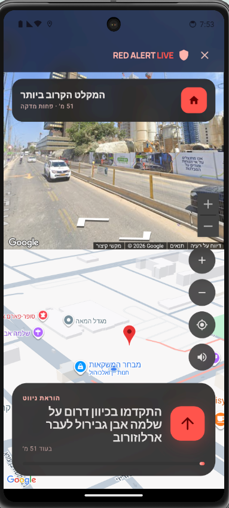
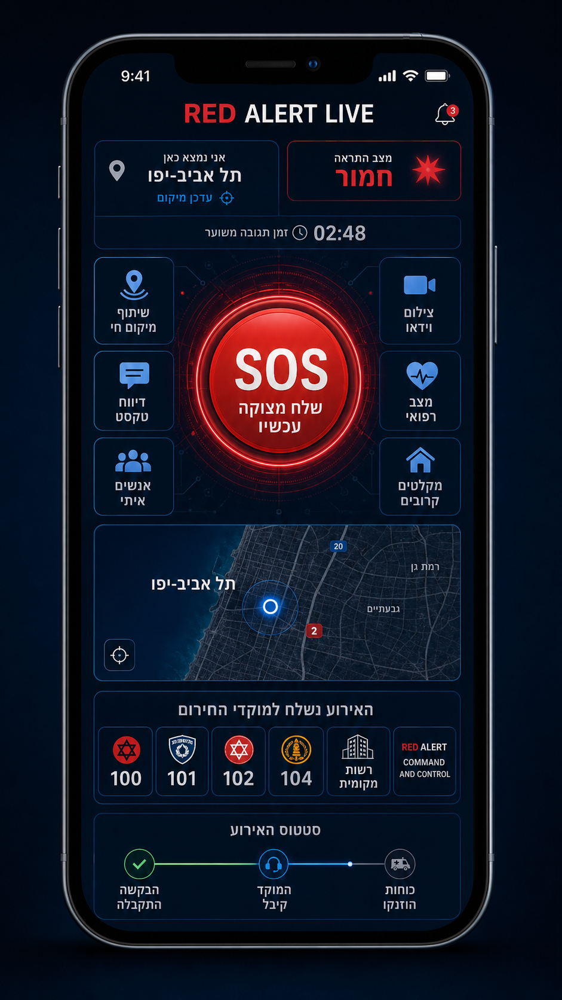

כשיש אזעקה – תדע לאן לרוץ לפני שהיא מסתיימת
RED ALERT LIVE מזהה התרעה רלוונטית לאזור שלך, מאתרת את המקלטים הקרובים ביותר ומנווטת אליהם – בלחיצה אחת, תוך שניות.
- ניווט חי למקלט הקרוב – לא רשימה, לא בלבול, מסך אחד ברור
- התרעה מדויקת לפי האזור שלך בלבד – בלי רעש של אזעקות שלא רלוונטיות אליך
- שלושה מקורות מידע במקביל – כולל גיבוי אם השרת הרשמי עמוס
הרגע שהאזעקה מופעלת – מה עובר לך בראש
שלוש שניות של פאניקה. שלוש שאלות שאין לך עליהן תשובה מיידית. RED ALERT LIVE נבנתה בדיוק לרגע הזה.
"איפה בכלל יש כאן מקלט?"
אתה ברחוב, בפארק, ברכב, בשכונה שלא מכיר. אין זמן לגוגל. RED ALERT LIVE מציגה לך את שני המקלטים הקרובים ביותר – במטרים.
"מה הכי קרוב ומה המסלול?"
ממ"ד? חדר מדרגות? מקלט ציבורי? האפליקציה מחליטה בשבילך ומנווטת ישר – בלי שאתה צריך לחשוב.
"כמה זמן יש לי?"
כל אזור בארץ מקבל זמן התגוננות שונה – ההפרש יכול להיות משמעותי. ההתרעה מותאמת לאזור שלך בלבד, כדי שתדע בדיוק כמה זמן יש לך להגיע למקלט.
מה קורה בפועל בזמן אזעקה
מהרגע שהאזעקה נשמעת עד שאתה בפתח המקלט – 5 שלבים, כולם אוטומטיים, כולם בלי לבזבז שנייה.
כשהמערכת מזהה התרעה רלוונטית לאזור שלך – מופעל תהליך חירום באפליקציה.
האפליקציה מאתרת את המיקום הנוכחי שלך ומכינה תצוגה ברורה כדי לא לבזבז שנייה.
בלחיצה אחת האפליקציה נפתחת ישר למסך החירום הרלוונטי בלי תפריטים מבלבלים.
במקום רשימה ארוכה – מוצגים שני המקלטים הקרובים ביותר עם מרחק כדי לבחור מהר.
לאחר בחירה האפליקציה נכנסת לניווט חי ומובילה אותך למקלט היעד בצורה ברורה.
מה בפנים – ולמה זה שונה
לא עוד אפליקציית אזעקה שמציגה רשימת ערים. RED ALERT LIVE נבנתה מהבסיס סביב שאלה אחת: כמה שניות עד שאתה בפתח המקלט?
המשך עבודה גם כשהמיקום לא מדויק FEATURED · ישראל
בזמן הפרעות לוויינים או חוסר דיוק GPS, האפליקציה ממשיכה לקבל התרעות לפי אזורי הגיאוגרפיה של פיקוד העורף, מאפשרת בחירה ידנית של עיר למציאת מקלט, ומסתמכת על שירותי המיקום של מערכת ההפעלה – כולל רשת סלולרית ו-Wi-Fi.
מקלטים קרובים – במטרים
אלפי מקלטים מרחבי הארץ. האפליקציה מציגה את השניים הקרובים ביותר למיקומך הנוכחי עם מרחק מדויק.
ניווט חי – לחיצה אחת
בוחר מקלט, יוצא לניווט. אין תפריטים, אין שאלות. האפליקציה מובילה אותך ישר ליעד.
התרעה לאזור שלך בלבד
סינון לפי עיר ו-zone מדויק – תקבל התרעה רק כשהיא רלוונטית אליך. לא כשיש אזעקה בצפון ואתה בדרום.
שלושה מקורות התרעה במקביל
פיקוד העורף + שני מקורות נוספים. אם אחד עמוס או קורס – האחרים ממשיכים. נבדק באזעקות אמת.
מצב תרגול
תרגל מסלול למקלט בבית, בעבודה, בשכונה – לפני שתצטרך אותו באמת.
פרטיות מלאה
היסטוריית אזעקות נשמרת אצלך במכשיר בלבד. לא מועברת לשרת, לא משותפת.
האפליקציה בפועל
מסך מפה עם מקלטים, ניווט חי, מצב תרגול – ממשק שנבנה לשניות של לחץ.
כרטיס מקלטים קרובים
רשימת המקלטים הקרובים אליך – עם זמן הליכה, מרחק וכפתור גדול שמתחיל ניווט עכשיו.

מסך היסטוריית אזעקות
תיעוד מלא של כל האירועים – חדירת רחפנים, טילים, חדירות מחבלים ועוד.

הודעת חירום
שליחת הודעת חירום עם המיקום המדויק שלך לאיש הקשר שבחרת – בלחיצה אחת.

ניווט חי
Street View ומפה משולבים – הוראות תפנית ברורות, מטרים מדויקים וזמן הגעה למקלט.

כפתור SOS – קריאת מצוקה ישירות למוקדי החירום בישראל.
ניתן לשלוח הודעה לכל גורם בצורה אוטומטית על פי סוג האירוע. אינטגרציה מתוכננת מול 100, 101, 102 ומוקדי 106 העירוניים.
- זיהוי אוטומטי של סוג האירוע – רפואי, ביטחוני, אש, סכנה כללית.
- מיקום מדויק עם CEP מאומת – לא רק כתובת, גם קומה ובניין.
- אישור קליטה כפול מהמוקד – תדע שהקריאה התקבלה.
- תיעוד מלא של האירוע – למעקב המשך ולביקורת.
בתיאום עם גופי ההצלה. תאריך השקה משוער: גרסה 2.0. אינו תחליף לחיוג ישיר למוקדי חירום.

תצוגה מוקדמת · Mockupפלטפורמת ניהול מקלטים לרשויות וגופי ביטחון.
כלי ייעודי לרשויות מקומיות, גופי ביטחון וגורמי חירום מקצועיים. לא אפליקציה לאזרח – מערכת מבצעית לניהול מלאי המקלטים בשטח הרשות.
תמונה ארצית מלמעלה
מפת ישראל אינטראקטיבית עם כלל המקלטים המוזנים. תצוגה לפי עיר, אזור, סוג מקלט – בלחיצה אחת.
סינון וחיפוש מתקדם
סינון לפי עיר, יישוב, סוג (מקלט / ממ"ד / מיגונית) וסטטוס. תצוגת רשימה לצד המפה לניהול יעיל.
תיעוד מלא לכל מקלט
כתיבת הערות מבצעיות ישירות על כל מקלט: קיבולת, נגישות, מצב פיזי, ציוד, מגבלות כניסה.
דשבורד פערי כיסוי
תצוגה סטטיסטית של פיזור המקלטים לפי עיר ואזור. כלי תכנון לזיהוי אזורים עם כיסוי חסר.
חיבור למוקד 106
דיווח על מפגעים בשטח: מקלט חסום, דרך גישה מסוכנת, נזק מבני. תושבים ידווחו מהאפליקציה – הרשות תראה בזמן אמת.
למי זה מיועד
- רשויות מקומיות ועיריות
- גופי ביטחון וחירום
- קציני ביטחון ישובים
- מחלקות חירום עירוניות
מעוניינים בפיילוט?
נשמח לדמו מותאם לרשות שלכם. השאירו פרטים בטופס ובחרו "גורם מקצועי" – נחזור אליכם ישירות.
למי זה מיועד
כל מי שחי באזור שיש בו אזעקות – ורוצה שבפעם הבאה לא יצטרך לנחש.
תושבים פרטיים
אתה, המשפחה, הילדים. כולם יודעים לאן רצים. בלי פאניקה, בלי ניחושים, בלי לבזבז שניות יקרות.
רשויות מקומיות
הנגשה דיגיטלית של מידע למקלטים לתושבים. פיילוטים עירוניים עם נתוני שטח אמיתיים.
גורמי חירום ומקצוע
כלי שטח לניווט מהיר למרחבים מוגנים, מבוסס GPS ומסד נתונים ארצי מעודכן.
צרו קשר – שותפויות, הדרכות ודיווחים
האפליקציה כבר חיה בייצור על Android. הטופס נועד עבורכם אם אתם רוצים:
- •ליצור קשר לשיתופי פעולה, להציע רעיונות או לדווח על תקלות
- •לקבוע הדרכת Zoom לארגונים, חברות אבטחה ורשויות
- •לקבל עדכון כשגרסת iOS תהיה מוכנה
שאלות נפוצות
האם האפליקציה כבר זמינה?
האפליקציה בשלבי בטא מתקדמים ונבדקת בשטח. מי שנרשם ברשימה יקבל גישה ראשון – עוד לפני העלייה לחנות.
האם היא נבדקה באזעקות אמת?
כן. המערכת פועלת ונבדקה בזמן אזעקות אמת – כולל מנגנון גיבוי לשעה שהשרת הרשמי עמוס.
מה ההבדל מאפליקציות אזעקה אחרות?
האפליקציות הקיימות מציגות אזעקות – RED ALERT LIVE מנווטת למקלט. זו המטרה היחידה שלה. ניווט חי, שני מקלטים קרובים, מסך אחד ברור בלחיצה אחת.
האם האפליקציה מחליפה את פיקוד העורף?
לא. RED ALERT LIVE היא כלי עזר נוסף. יש לפעול תמיד לפי ההנחיות הרשמיות של פיקוד העורף.
מה קורה עם הפרטים שאני משאיר?
משמשים רק לשליחת עדכונים על האפליקציה. לא נעביר את המייל שלך לגורמים חיצוניים לצרכי פרסום.
תנאי שימוש והצהרת אחריות לחצו לפתיחה
- אפליקציה לא רשמיתRED ALERT LIVE אינה אפליקציה רשמית של פיקוד העורף, צה"ל, מדינת ישראל, או כל גוף ממשלתי. בכל מצב חירום יש לפעול לפי הנחיות פיקוד העורף בלבד.
- הגבלת אחריותהשימוש באחריות המשתמש בלבד. האפליקציה מסופקת כפי שהיא ("AS IS"). המפתחים אינם אחראים לכל נזק ישיר, עקיף, גופני, נפשי או רכושי שייגרם עקב שימוש בה.
- דיוק המידע וניווטמידע האזעקות עשוי להיות מושהה, חלקי או שגוי. נתוני מפות ומקלטים עשויים לשקף מציאות שונה מהשטח. האפליקציה היא כלי עזר בלבד.
- נתוני מיקוםנתוני GPS משמשים אך ורק לניווט מקומי. אינם נשמרים בשרתים ואינם מועברים לצד שלישי לצרכי פרסום.
- מגבלות שימושאין להשתמש באפליקציה לניהול כוחות חירום, תיאום מבצעי, שליטה ברכב אוטונומי, או כל שימוש שבו כשל עלול לגרום לסכנת חיים.
- שינויים בתנאיםהמפעילים רשאים לשנות תנאים אלה בכל עת. המשך השימוש מהווה הסכמה לתנאים המעודכנים.